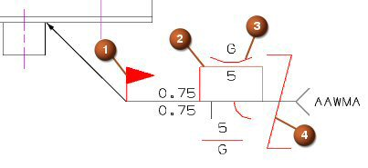

Weld symbol enhancements
What is it?
-
A new Weld Standard option, available in the Annotation Style and Annotation Preferences dialog boxes, lets you interactively set the weld standard. This lets you access different standards-driven weld symbols without having to reset the entire drafting standard in your NX session.
-
A new Weld Symbol Size Factor option lets you control the size of the symbols in a weld symbol. The size is given as a factor of the character size of the symbol, where 1.0 means the symbol is equal to the current character size.
The size factor is applied to the field symbol (1), the weld symbol (2), the contour symbol (3), and the staggered annotation symbol (4) elements above and below the reference line of the weld symbol.

Where do I find it?
|
Application |
Drafting and PMI |
|
Toolbar |
(Drafting only) Annotation→Annotation Preferences |
|
Menu |
Preferences→Annotation |
|
Graphics window |
Right-click weld symbol→Style |
|
Location in dialog box |
Symbols tab→Weld group→Weld Standard Symbols tab→Weld group→Weld Symbol Size Factor |